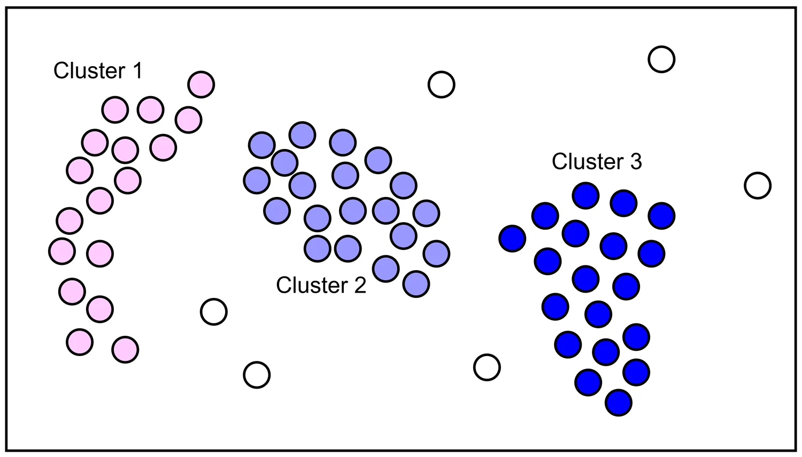
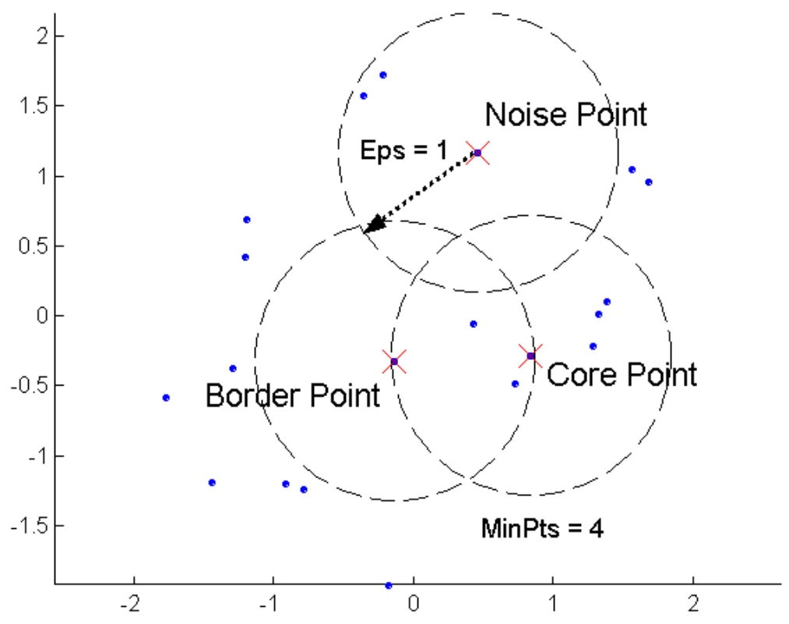
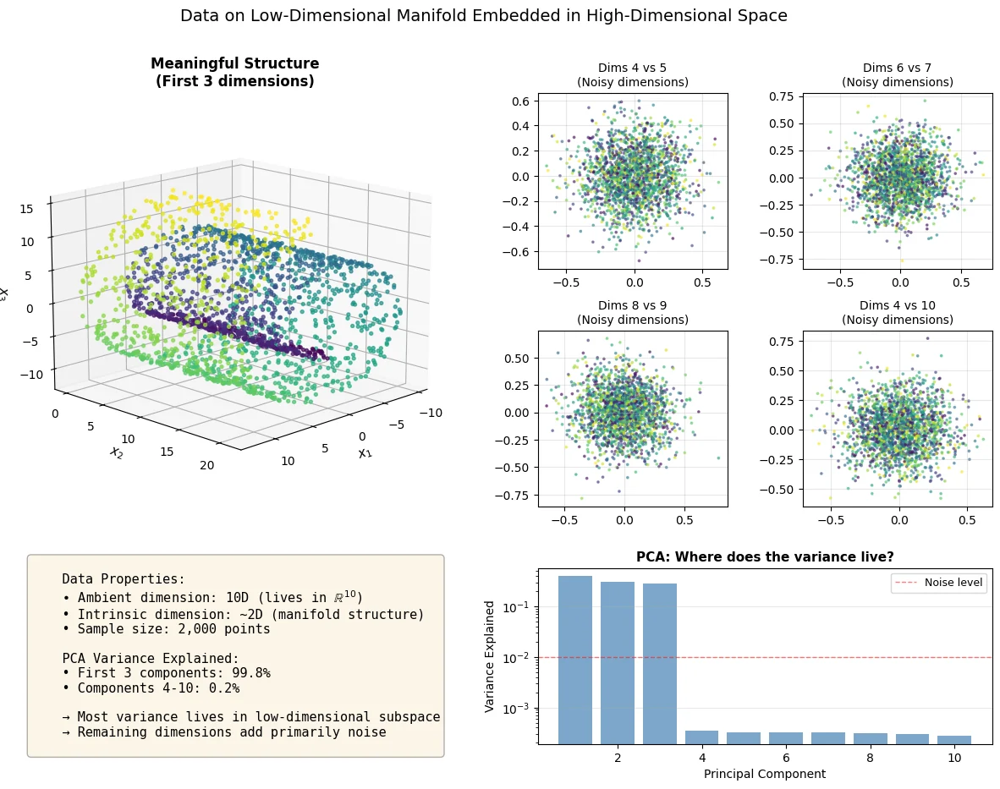
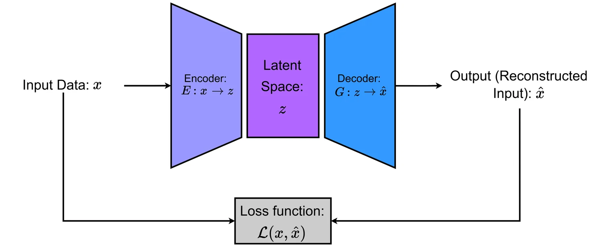
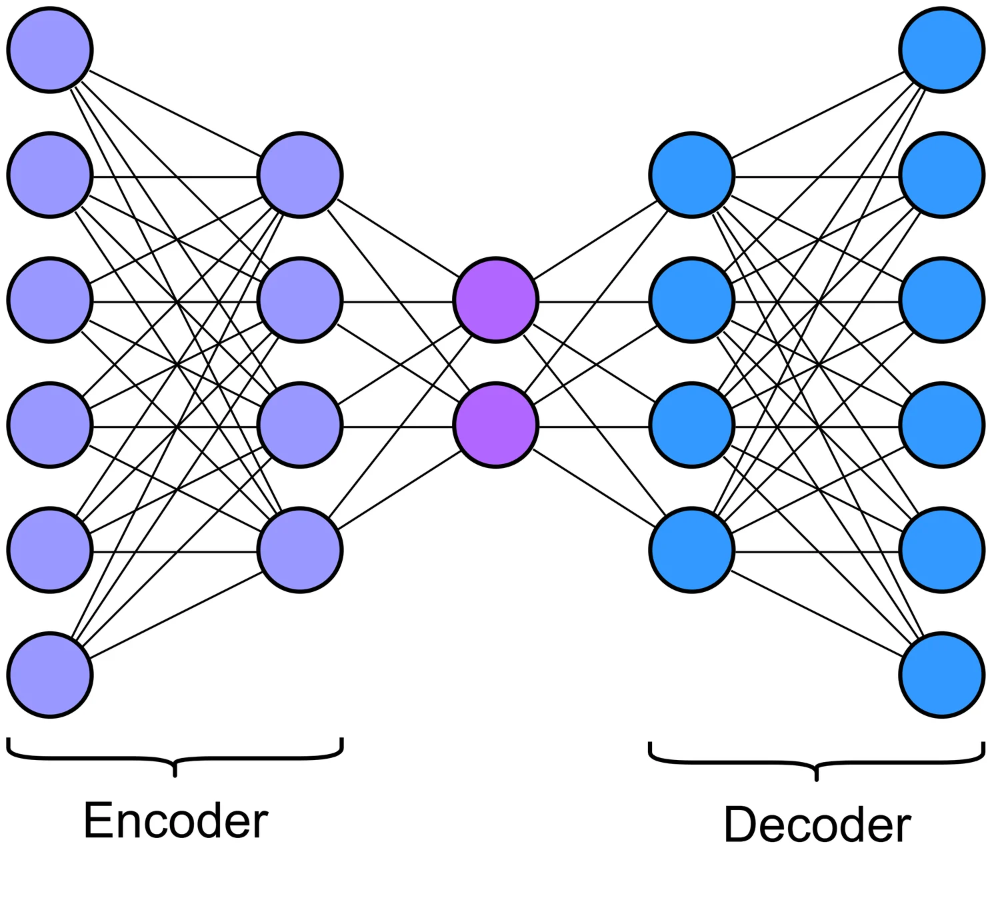
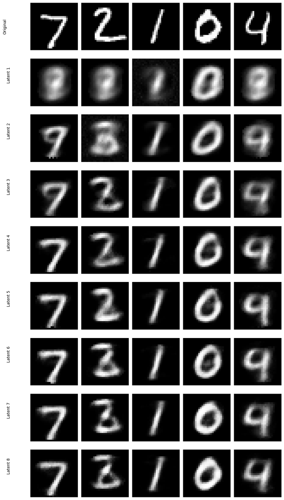
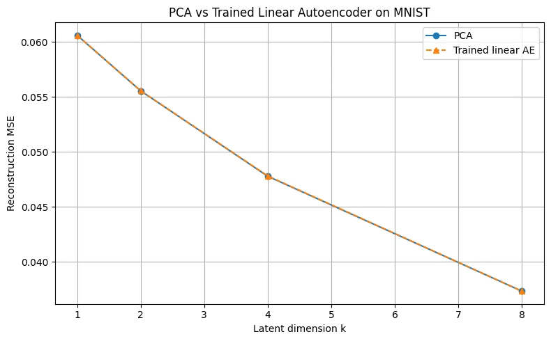
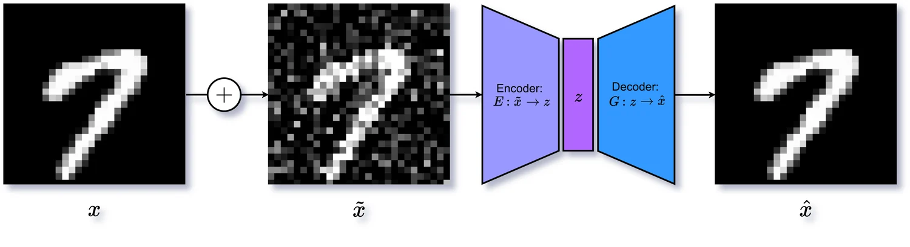
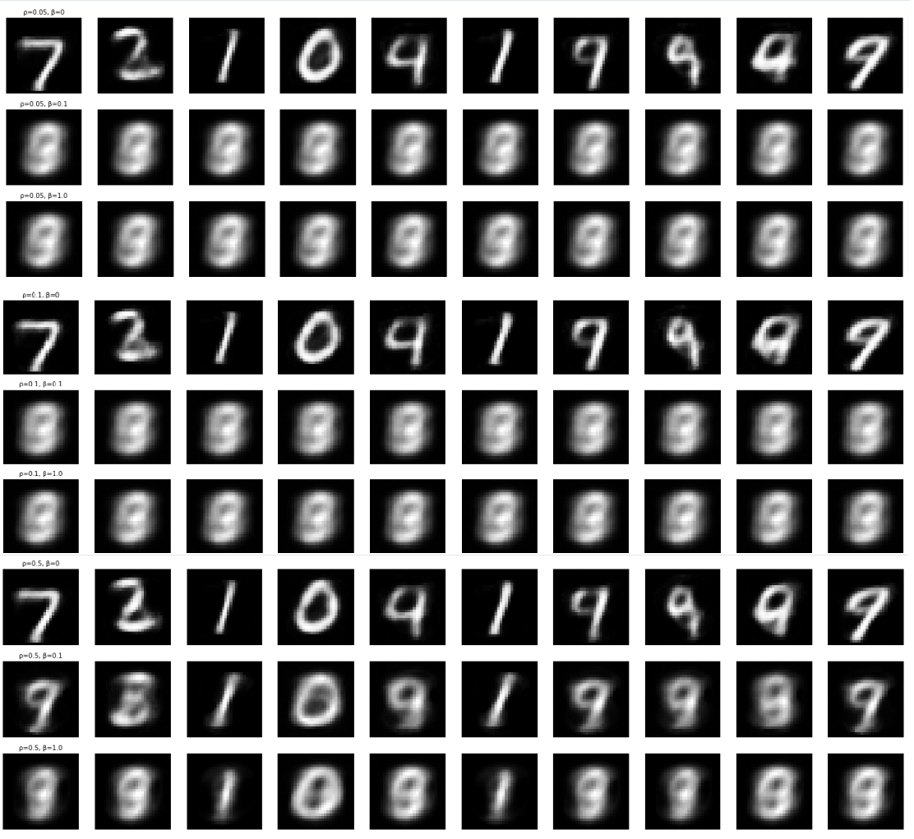
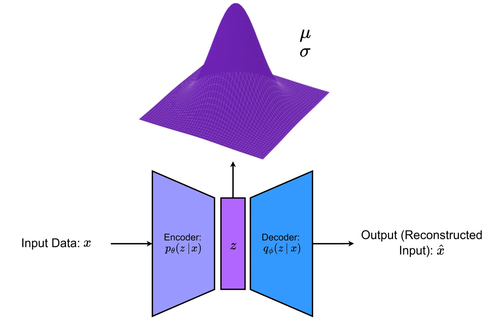

Unsupervised Learning
Every method so far has been handed the answers. Here there are none — only data, and the hope that its structure is worth something. Two families follow from that: clustering, which looks for groups, and autoencoders, which look for a shorter description. Both come down to the same question: what can you throw away and still have the data back?
Part 6.1 · Clustering as Optimisation
Unsupervised learning seeks structure in unlabelled data. For any given point we have no ground-truth label to check against, so we have to rely on the nature of the data itself. The usual tasks are clustering, dimensionality reduction, density estimation and anomaly detection, and the aim in each case is to discover latent regularities that explain what we observe.
Given \(n\) points \(\mathbf{X} = \{\mathbf{x}_i\}_{i=1}^n\) with \(\mathbf{x}_i \in \mathbb{R}^d\), a clustering algorithm returns either
- a hard partition \(\{C_1,\dots,C_k\}\) with \(C_j \cap C_\ell = \varnothing\) for \(j \neq \ell\) and \(\bigcup_j C_j = \{1,\dots,n\}\) — every point belongs to exactly one cluster; or
- a soft assignment \(\gamma_{ij} \in [0,1]\) with \(\sum_{j=1}^k \gamma_{ij} = 1\) — every point belongs to every cluster, to some degree.
Soft assignment matters whenever points genuinely sit between groups: a document about two topics, a customer who fits two profiles, a point in the overlap of two blobs. Forcing such a point to pick a side discards real information about how ambiguous it was.
Clustering is meaningless without a notion of (dis)similarity, and the choice determines what structure is recoverable at all. Euclidean distance, Manhattan distance, cosine distance and domain-specific dissimilarities like dynamic time warping all give different answers on the same data. This is the same point made in Chapter 2's similarity measures — it just matters more here, because there are no labels to tell you when the choice was wrong.
The objective
There are three equivalent ways to look at what clustering is doing, and it helps to keep all three in mind.
Compression
Represent \(n\) points using only \(k\) prototypes. The loss is the total squared quantisation error: each point pays the squared distance to its prototype.
Variance decomposition
Split the total scatter of the data into a within-cluster part and a between-cluster part. Minimising the first automatically maximises the second.
Geometry
Centroids carve the space into cells, each collecting the points closest to one prototype. The objective is the total squared distance from points to their cell's generator.
Writing \(C_1,\dots,C_k\) for the partition and \(Z = \{z_j\}_{j=1}^k\) for the centroids, all three views give the same optimisation problem:
\[ \min_{C_1,\dots,C_k,\; Z}\; \sum_{j=1}^{k} \sum_{i \in C_j} d^2(\mathbf{x}_i, \mathbf{z}_j). \]
With \(d(\mathbf{x},\mathbf{z}) = \|\mathbf{x}-\mathbf{z}\|_2\) this is the within-cluster sum of squares (WCSS). In matrix form, with \(\mathbf{Y} \in \{0,1\}^{n \times k}\) the assignment matrix whose rows sum to 1,
\[ \mathrm{WCSS}(\mathbf{Y},\mathbf{Z}) = \|\mathbf{X} - \mathbf{Y}\mathbf{Z}\|_F^2 \quad\text{subject to}\quad \mathbf{Y}\mathbf{1} = \mathbf{1},\;\; \mathbf{Y}\in\{0,1\}^{n\times k}. \]
That form makes two things obvious. The problem is nonconvex — the binary constraint on \(\mathbf{Y}\) sees to that — and it is naturally attacked by alternating minimisation, since fixing either \(\mathbf{Y}\) or \(\mathbf{Z}\) makes the other easy.
The variance decomposition
With \(\bar{\mathbf{x}}\) the grand mean and \(\mathbf{z}_j\) the cluster means, define
\[ \mathrm{TSS} = \sum_{i=1}^n \|\mathbf{x}_i - \bar{\mathbf{x}}\|^2, \qquad \mathrm{WCSS} = \sum_{j=1}^k \sum_{i \in C_j} \|\mathbf{x}_i - \mathbf{z}_j\|^2, \qquad \mathrm{BCSS} = \sum_{j=1}^k |C_j|\, \|\mathbf{z}_j - \bar{\mathbf{x}}\|^2 . \]
Then
\[ \mathrm{TSS} = \mathrm{WCSS} + \mathrm{BCSS}. \]
The proof is one line of algebra. Inside cluster \(j\), write \(\mathbf{x}_i - \bar{\mathbf{x}} = (\mathbf{x}_i - \mathbf{z}_j) + (\mathbf{z}_j - \bar{\mathbf{x}})\) and expand the square. The cross-terms carry a factor \(\sum_{i \in C_j}(\mathbf{x}_i - \mathbf{z}_j)\), which is exactly zero when \(\mathbf{z}_j\) is the mean of the cluster. Summing over clusters gives the identity.
TSS depends only on the data — no clustering appears in it. So it is a constant. Every unit of WCSS you remove has to reappear as BCSS. Minimising within-cluster scatter and maximising between-cluster separation are therefore not two goals to be balanced: they are literally the same objective, viewed from either end.
k-means and Lloyd's algorithm
k-means is the special case of the general objective with squared Euclidean distance:
\[ J(C,Z) = \sum_{j=1}^k \sum_{i \in C_j} \|\mathbf{x}_i - \mathbf{z}_j\|_2^2 = \|\mathbf{X}-\mathbf{Y}\mathbf{Z}\|_F^2 . \]
Lloyd's algorithm minimises it by alternating two steps, each of which solves its own subproblem exactly.
1 · Assignment — optimise \(C\) with \(Z\) fixed
\[ i \in C_j \iff j = \arg\min_{\ell} \|\mathbf{x}_i - \mathbf{z}_\ell\|_2^2 \]
Each point independently picks its nearest centroid. The boundary between two centroids is the set of equidistant points — a perpendicular bisector, hence an affine hyperplane, so the result is a polyhedral partition.
2 · Update — optimise \(Z\) with \(C\) fixed
\[ \frac{\partial}{\partial \mathbf{z}_j}\sum_{i\in C_j}\|\mathbf{x}_i-\mathbf{z}_j\|^2 = -2\sum_{i \in C_j}(\mathbf{x}_i - \mathbf{z}_j) = 0 \]
which gives \(\mathbf{z}_j = \frac{1}{|C_j|}\sum_{i \in C_j}\mathbf{x}_i\), the arithmetic mean. Note that this derivation used the Euclidean norm — k-means is not metric-agnostic.
The assignment step minimises \(J\) over \(C\) with \(Z\) fixed; the update step minimises \(J\) over \(Z\) with \(C\) fixed. So \(J\) is non-increasing, and strictly decreases unless neither step changes anything. Since there are only finitely many assignments — at most \(k^n\) — the algorithm must reach a fixed point in finitely many iterations. It says nothing about which fixed point.
One iteration costs \(\mathcal{O}(nkd)\) for the distances and \(\mathcal{O}(nd)\) for the means. Elkan's algorithm uses the triangle inequality to skip most distance evaluations; mini-batch k-means cuts the per-iteration cost on very large \(n\). Stop when the assignments stabilise or when the relative decrease \(\frac{J^{(t-1)}-J^{(t)}}{\max(1, J^{(t-1)})}\) falls below a tolerance. And standardise your features first — otherwise whichever feature happens to have the largest units will dominate the Euclidean distance.
The worked example
The notes work through two full iterations on ten points in \(\mathbb{R}^2\) with \(k = 2\), starting from \(\mathbf{z}_1^{(0)} = (1,1)\) and \(\mathbf{z}_2^{(0)} = (5,7)\). The figure below recomputes every distance, assignment and centroid live, so you can check any number in the table by hand.
- At iteration 1, \(\mathbf{x}_3 = (3,4)\) is at squared distance 13.00 from both centroids. The tie is broken toward the lower index, which is a convention, not mathematics — a different tie-break gives a different run.
- WCSS falls from \(77.25\) to \(63.821181\), and exactly one point — \(\mathbf{x}_7 = (3.5, 4.5)\) — changes cluster in the second iteration.
- The notes stop here, but the algorithm has not converged. Keep stepping and WCSS falls to \(43.119048\), which happens to be the globally optimal 2-clustering of these ten points (verified by brute force over all \(2^{10}\) partitions). That is luck, not a guarantee.
Where k-means fails
The assignment step gives every pair of clusters a straight boundary. That single fact generates most of k-means' failure modes.
| Limitation | Why it happens |
|---|---|
| Initialisation sensitivity | The objective is nonconvex in \((C,Z)\), so different seeds land in different local minima. This is what k-means++ addresses. |
| Shape bias | Squared Euclidean distance plus the mean implies a preference for spherical, convex clusters. Elongated or curved manifolds get sliced by straight boundaries. |
| Unequal sizes and spreads | A compact cluster next to a diffuse one tends to get split, while the diffuse one absorbs strays. k-means implicitly wants similarly sized, similarly dense groups. |
| Metric mismatch | When similarity is not Euclidean, the mean may be meaningless or undefined. Use medoids or a kernel instead. |
| Outliers | The mean is not robust — one extreme point drags a centroid away from the bulk and inflates WCSS. |
| High dimension | Distances concentrate as \(d\) grows, so standardisation and a PCA step usually help before clustering at all. |
When a clustering looks wrong, ask whether the algorithm found a worse objective value than the answer you wanted, or a better one. If worse, you have an optimisation problem — restart, reseed, run longer. If better — as on the moons and rings above — the optimiser did its job perfectly and your objective simply does not encode the structure you had in mind. No amount of restarting will fix that; you need a different method.
k-means++
Vanilla k-means picks its initial centroids uniformly at random, which has no mechanism to avoid putting several seeds inside the same natural group. k-means++ replaces that with distance-aware sampling:
- Choose \(\mathbf{z}_1\) uniformly at random from the data.
- For each point compute \(D(\mathbf{x}_i) = \min_{j} \|\mathbf{x}_i - \mathbf{z}_j\|_2\), the distance to the nearest centre chosen so far.
- Choose the next centre from the data with probability \[ \Pr(\mathbf{x}_i \text{ chosen}) = \frac{D(\mathbf{x}_i)^2}{\sum_{l=1}^n D(\mathbf{x}_l)^2}. \]
- Repeat until \(k\) centres are chosen, then run Lloyd's algorithm from them.
The squaring is what gives the method its bite: it makes far-away points dramatically more likely to be picked, so seeds spread across the data instead of clumping. Once a region has a centre, its points have small \(D\) and are unlikely to be chosen again.
Part 6.2 · Beyond the Mean
Both of k-means' structural weaknesses trace back to specific choices. It uses the mean as the representative, which requires coordinates you can average and is not robust. And it measures distance in the input space, which forces linear boundaries. Relaxing each choice gives one method.
k-medoids: robust prototypes for general dissimilarities
For a general dissimilarity \(\delta(\cdot,\cdot)\), choose \(k\) actual data points \(\mathbf{x}_{m_1},\dots,\mathbf{x}_{m_k}\) — the medoids — to minimise
\[ \min_{C_1,\dots,C_k,\; m_1,\dots,m_k \in \{1,\dots,n\}} \sum_{j=1}^k \sum_{i \in C_j} \delta(\mathbf{x}_i, \mathbf{x}_{m_j}). \]
The medoid of a cluster is its most centrally located member: the point minimising total dissimilarity to the rest.
The classical algorithm is PAM (Partitioning Around Medoids), which mirrors Lloyd's but with a different update: assign every point to its nearest medoid, then try swapping each medoid with each non-medoid and keep any swap that lowers the total cost. Because the representatives must be actual observations, the search space is discrete — there is no gradient, only combinatorial improvement. CLARA and CLARANS scale this up by sampling and randomised search respectively.
Robustness
A single extreme observation cannot drag a medoid away from the cluster's core, because the medoid must be one of the points. The mean has no such protection.
Any dissimilarity
\(\delta\) can be edit distance on strings, dynamic time warping on time series, or graph edit distance — anything at all. There is no requirement that you be able to average.
Interpretability
Each representative is a real example you can inspect as a prototypical member. A mean vector often corresponds to nothing that exists.
Kernel k-means
The other relaxation keeps the mean but changes the space. Map the data through \(\phi: \mathbb{R}^d \to \mathcal{H}\) and run ordinary k-means on the images, minimising
\[ \sum_{j=1}^k \sum_{i \in C_j} \|\phi(\mathbf{x}_i) - \boldsymbol{\mu}_j\|_{\mathcal{H}}^2, \qquad \boldsymbol{\mu}_j = \frac{1}{|C_j|}\sum_{i \in C_j}\phi(\mathbf{x}_i). \]
For useful kernels \(\phi\) is impossible to compute — the Gaussian RBF maps into an infinite-dimensional space. But expanding the squared distance leaves only inner products, and every inner product is a kernel evaluation:
\[ \|\phi(\mathbf{x}) - \boldsymbol{\mu}_j\|_{\mathcal{H}}^2 = K(\mathbf{x},\mathbf{x}) - \frac{2}{|C_j|}\sum_{i \in C_j} K(\mathbf{x},\mathbf{x}_i) + \frac{1}{|C_j|^2}\sum_{i,i' \in C_j} K(\mathbf{x}_i,\mathbf{x}_{i'}). \]
So the assignment step runs entirely on the \(n \times n\) kernel matrix, and \(\phi(\mathbf{x})\) is never formed. This is the same trick as the kernel SVM in Chapter 3, applied to a different objective.
The notes present nested rings as a case where kernel k-means succeeds. It can — but rarely. Measuring over 24 restarts at each of several \(\gamma\), kernel k-means recovers the two rings in about 8% of runs at its single best \(\gamma\), and in none at all elsewhere. The reason is structural: kernel k-means still wants clusters that are compact in feature space, and a ring is a curve. Under an RBF kernel two points on opposite sides of the same ring have \(K \approx 0\), so they are nearly orthogonal — further apart in feature space than points on different rings that happen to be radially adjacent.
Spectral clustering — which the notes correctly describe as a relaxation of kernel k-means — solves the same problem on 100% of runs for any \(\gamma \gtrsim 20\). It embeds using the smallest eigenvectors of the normalised Laplacian and then runs plain k-means there, so it keys on connectivity rather than compactness. A ring only has to be connected, which it is. Switch between the two methods in the figure and compare the success-rate readout.
Two moons is the fairer advertisement for kernel k-means: there it reaches 96% at \(\gamma \approx 8\).
The Gaussian kernel \(K(\mathbf{x},\mathbf{y}) = \exp(-\|\mathbf{x}-\mathbf{y}\|^2 / 2\sigma^2)\) is the usual choice, since it permits arbitrarily curved boundaries; polynomial kernels \((\langle \mathbf{x},\mathbf{y}\rangle + c)^p\) are used when feature interactions matter. The cost is the \(n \times n\) kernel matrix, which is \(\mathcal{O}(n^2)\) memory — so kernel k-means suits moderate \(n\), or needs kernel approximations.
Part 6.3 · Density-Based Clustering
Every method so far optimises a global criterion built from distances to prototypes. Density-based clustering starts somewhere else entirely: a cluster is a region where points are packed closely together, and clusters are separated by regions where they are not. Instead of choosing \(k\) up front, we ask how many neighbours each point has within a small radius, and grow connected regions outward from the crowded ones.
This buys three things at once: clusters can have any shape, the number of clusters is discovered rather than specified, and points in no dense region are labelled noise instead of being forced into a cluster they do not belong to.

DBSCAN
DBSCAN takes two parameters: a radius \(\varepsilon\) and a count \(\texttt{minPts}\). For a metric \(d\), the \(\varepsilon\)-neighbourhood of \(p\) is \(\mathcal{N}_\varepsilon(p) = \{q : d(p,q) \le \varepsilon\}\), and the local density around \(p\) is approximated by how many points that set contains.
- Core point: \(|\mathcal{N}_\varepsilon(p)| \ge \texttt{minPts}\) — \(p\) sits in a dense region.
- Border point: not core, but lying inside the \(\varepsilon\)-neighbourhood of some core point.
- Noise: neither core nor border.
These notes count the neighbourhood excluding the point itself, so \(\texttt{minPts}\) is "the minimum number of other points within \(\varepsilon\)". Many textbooks and scikit-learn include the point, which shifts every threshold by one. Neither is wrong, but mixing them will silently change your answers — the figures on this page follow the notes' convention throughout.

Density-reachability
Three relations turn dense points into clusters.
Directly density-reachable
\(q\) is directly density-reachable from \(p\) if \(p\) is core and \(q \in \mathcal{N}_\varepsilon(p)\). This relation is asymmetric: it only runs from a core point outward.
Density-reachable
\(p\) is density-reachable from \(q\) if there is a chain \(q = p_0, p_1, \dots, p_\ell = p\) with each step directly density-reachable. Every intermediate point must be core.
Density-connected
\(p\) and \(q\) are density-connected if some \(o\) reaches both. This is symmetric, and it is the relation clusters are built from.
A cluster is then a maximal set of density-connected points — maximal meaning you cannot add anything else without breaking the property. The algorithm follows directly: label every point core or not, then from each unvisited core point run a breadth-first search, absorbing neighbours. Core neighbours are added and expanded; border neighbours are added but not expanded. Whatever is never reached is noise.
This asymmetry is the crux of DBSCAN and the part students most often get wrong. A border point is close enough to a dense region to belong to it, but is not itself in a dense region. If borders could expand, a chain of sparse points could bridge two genuinely separate clusters and merge them. By stopping expansion at borders, DBSCAN guarantees that every cluster is held together by a connected backbone of genuinely dense points.
One consequence: a border point in reach of two clusters is assigned to whichever is processed first. DBSCAN is not fully deterministic at the boundaries.
The toy example
Six points, three parameter settings, three completely different answers. The notes use \(A(1,2)\), \(B(2,2)\), \(C(2,3)\) as a tight group, \(D(8,7)\), \(E(8,8)\) as a second pair, and \(F(25,80)\) as a far outlier.
| Setting | Core points | Result | What it shows |
|---|---|---|---|
| \(\varepsilon = 2\), \(\texttt{minPts} = 3\) | none | every point is noise | No point has three neighbours within radius 2, so nothing can seed a cluster. Demanding too much density returns nothing at all. |
| \(\varepsilon = 2\), \(\texttt{minPts} = 2\) | \(A, B, C\) | \(C_1 = \{A,B,C\}\); \(D,E,F\) noise | Relaxing the count alone promotes the tight triple to core. \(D\) and \(E\) have only one neighbour each and remain noise. |
| \(\varepsilon = 8\), \(\texttt{minPts} = 3\) | \(B, C, D\) | \(C_1 = \{A,B,C,D,E\}\); \(F\) noise | A wider radius bridges the two groups. \(A\) and \(E\) are not core but sit inside core neighbourhoods, so they join as border points. |
At \(\varepsilon = 8\) the neighbourhoods are \(\mathcal{N}(A) = \{B,C\}\), \(\mathcal{N}(B) = \{A,C,D\}\), \(\mathcal{N}(C) = \{A,B,D,E\}\), \(\mathcal{N}(D) = \{B,C,E\}\), \(\mathcal{N}(E) = \{C,D\}\), \(\mathcal{N}(F) = \varnothing\). So \(B, C, D\) clear the threshold of 3 and \(A, E, F\) do not. \(A\) appears in \(\mathcal{N}(B)\) and \(\mathcal{N}(C)\), and \(E\) in \(\mathcal{N}(C)\) and \(\mathcal{N}(D)\) — both are borders. \(F\) appears in nothing, so it stays noise no matter how the search runs.
The near-misses are worth checking: \(d(B,E) = \sqrt{72} \approx 8.49\) and \(d(A,D) = \sqrt{74} \approx 8.60\) both just exceed \(\varepsilon = 8\). Nudge \(\varepsilon\) up in the figure and the labels change.
Choosing ε and minPts
For \(\texttt{minPts}\), the usual rules of thumb are 3–5 for low-dimensional data, rising to roughly \(d+1\) or \(2d\) in higher dimensions to compensate for sparser neighbourhoods. Larger \(\texttt{minPts}\) gives more robustness to noise and fewer, denser clusters.
For \(\varepsilon\), use the \(k\)-distance plot: fix \(k = \texttt{minPts}\), compute each point's distance to its \(k\)-th nearest neighbour, sort those distances and plot them. The curve rises slowly across the dense points and then turns sharply upward as it reaches the outliers. Choose \(\varepsilon\) near that knee — it is the same elbow heuristic used for choosing \(k\) earlier.
Strengths
- Recovers clusters of arbitrary shape.
- Labels outliers as noise instead of absorbing them.
- The number of clusters emerges from the data.
Limitations
- A single global scale: one \((\varepsilon, \texttt{minPts})\) pair for the whole dataset, which assumes all clusters have similar density.
- Sensitive to those two parameters — poor choices merge, split, or discard everything.
- Distances become uninformative in high dimensions.
Beyond DBSCAN: HDBSCAN
The single-global-scale problem is real and easy to hit: tune \(\varepsilon\) to the dense clusters and the sparse ones fragment into noise; raise it to capture the sparse ones and the dense ones merge. HDBSCAN removes the choice by building a hierarchy across all density scales at once.
For a fixed \(\texttt{minPts} = k\), the core distance \(\text{core}_k(p)\) is the distance from \(p\) to its \(k\)-th nearest neighbour — small in dense regions, large in sparse ones. The mutual reachability distance is then
\[ d_{\text{mr}}(p,q) = \max\{\text{core}_k(p),\; \text{core}_k(q),\; d(p,q)\}. \]
This inflates distances in sparse regions while leaving them untouched in dense ones, so low-density bridges between clusters become expensive to cross. HDBSCAN then builds the minimum spanning tree under \(d_{\text{mr}}\), which is exactly the order in which groups would merge as \(\varepsilon\) grows — equivalent to running DBSCAN at every \(\varepsilon\) simultaneously. Finally it condenses that hierarchy and extracts the clusters that persist over the widest range of density levels, on the grounds that a cluster which survives many scales is more likely to be real than one that appears at exactly one threshold.
Part 6.4 · Soft Clustering
Every method so far produces a crisp partition. Often that is too rigid: documents span topics, customers fit several profiles, and a point sitting exactly between two groups is genuinely ambiguous. Soft clustering replaces the hard label with weights \(\gamma_{ij} \in [0,1]\) summing to 1 across clusters — instead of "\(\mathbf{x}_i\) is in cluster 2" we say it is 70% cluster 2, 25% cluster 1, 5% cluster 3.
The principled route to such weights is to treat clustering as a generative process: first draw a latent cluster label \(z\), then draw \(\mathbf{x}\) from that cluster's distribution.
Roll a \(k\)-sided die \(n\) times with probabilities \(\theta = (p_1,\dots,p_k)\). Grouping the outcomes by category with counts \(n_j\), the likelihood and log-likelihood are \[ P(S_n \mid \theta) = \prod_{j=1}^k p_j^{\,n_j}, \qquad \log P(S_n\mid\theta) = \sum_{j=1}^k n_j \log p_j . \] Maximising subject to \(\sum_j p_j = 1\) with a Lagrange multiplier gives \(\hat{p}_j = n_j / n\) — each probability is just the relative frequency. This "counts over \(n\)" pattern reappears for mixture weights and, later, for responsibilities.
Gaussian mixtures
Model each cluster as a Gaussian, \(p(\mathbf{x} \mid z = j) = \mathcal{N}(\mathbf{x} \mid \boldsymbol{\mu}_j, \Sigma_j)\), with a categorical latent label \(\Pr(z = j) = \pi_j\). Marginalising out \(z\),
\[ p(\mathbf{x} \mid \Theta) = \sum_{j=1}^k \pi_j\, \mathcal{N}(\mathbf{x} \mid \boldsymbol{\mu}_j, \Sigma_j), \]
where \(\Theta = \{\pi_j, \boldsymbol{\mu}_j, \Sigma_j\}_{j=1}^k\).
The likelihood of a dataset is then a product over points of a sum over components:
\[ P(X \mid \Theta) = \prod_{i=1}^n \left( \sum_{j=1}^k \pi_j\, \mathcal{N}(\mathbf{x}_i \mid \boldsymbol{\mu}_j, \Sigma_j) \right). \]
That \(\prod\)–\(\sum\) structure is what makes direct maximisation unpleasant: the logarithm cannot get past the sum, so the parameters never separate.
The easy case first: known labels
Suppose we did know which cluster each point came from, encoded as hard indicators \(s_{ij} \in \{0,1\}\) with \(\sum_j s_{ij} = 1\). Then the complete-data log-likelihood is
\[ \log P(X, S \mid \Theta) = \sum_{i=1}^n \sum_{j=1}^k s_{ij} \Bigl( \log \pi_j + \log \mathcal{N}(\mathbf{x}_i \mid \boldsymbol{\mu}_j, \Sigma_j) \Bigr), \]
and the logarithm now reaches everything. Writing \(N_j = \sum_i s_{ij}\), the \(\pi\) terms are exactly the categorical problem above, so \(\hat{\pi}_j = N_j / n\). Differentiating the Gaussian terms (in 1-D, for clarity) gives
\[ \hat{\mu}_j = \frac{1}{N_j}\sum_{i:\,s_{ij}=1} x_i, \qquad \hat{\sigma}_j^2 = \frac{1}{N_j}\sum_{i:\,s_{ij}=1} (x_i - \hat{\mu}_j)^2 . \]
In words: with known labels, maximum likelihood is nothing more than fit one Gaussian per cluster and use the observed frequencies as mixing weights.
Expectation–Maximisation
We do not know the labels. EM's move is to replace the hard indicators \(s_{ij}\) with soft responsibilities \(\gamma_{ij}\), then reuse the formulas above verbatim.
E-step — soft assignment
\[ \gamma_{ij} = \Pr(z_i = j \mid \mathbf{x}_i, \Theta^{\text{old}}) = \frac{\pi_j\, \mathcal{N}(\mathbf{x}_i \mid \boldsymbol{\mu}_j, \Sigma_j)} {\sum_{\ell=1}^k \pi_\ell\, \mathcal{N}(\mathbf{x}_i \mid \boldsymbol{\mu}_\ell, \Sigma_\ell)} \]
How much component \(j\) "claims" point \(i\). Compare with k-means' "assign to the nearest centroid".
M-step — weighted refit
With \(N_j = \sum_i \gamma_{ij}\), \[ \pi_j = \frac{N_j}{n}, \qquad \boldsymbol{\mu}_j = \frac{1}{N_j}\sum_i \gamma_{ij}\mathbf{x}_i, \] \[ \Sigma_j = \frac{1}{N_j}\sum_i \gamma_{ij}(\mathbf{x}_i - \boldsymbol{\mu}_j)(\mathbf{x}_i - \boldsymbol{\mu}_j)^\top . \]
Identical to the known-label case, with \(\gamma_{ij}\) in place of \(s_{ij}\).
Iterate until the log-likelihood stops improving. EM is guaranteed never to decrease the log-likelihood, which is why it converges — to a local maximum, with all the initialisation sensitivity that implies. It is common to initialise the means from a k-means run.
Nothing stops a component from collapsing onto a single point: as \(\Sigma_j \to 0\) with \(\boldsymbol{\mu}_j\) sitting exactly on a data point, that point's density — and the whole log-likelihood — diverges to \(+\infty\). This is not a bug in EM but a genuine defect of the objective. In practice the fix is regularisation: add \(\lambda I\) to each covariance, or constrain the covariances to be diagonal, spherical, or shared across components.
GMMs and k-means
The two are more closely related than they look. Constrain every covariance to be spherical and equal, \(\Sigma_j = \sigma^2 I\), and let \(\sigma^2 \to 0\). The responsibilities
\[ \gamma_{ij} = \frac{\pi_j \exp\!\left(-\|\mathbf{x}_i - \boldsymbol{\mu}_j\|^2 / 2\sigma^2\right)} {\sum_\ell \pi_\ell \exp\!\left(-\|\mathbf{x}_i - \boldsymbol{\mu}_\ell\|^2 / 2\sigma^2\right)} \]
become a softmax over squared distances with temperature \(\sigma^2\). As \(\sigma^2 \to 0\) the softmax saturates onto its largest term, so \(\gamma_{ij} \to 1\) for the nearest mean and 0 elsewhere. The E-step becomes nearest-centroid assignment and the M-step becomes the arithmetic mean: EM degenerates exactly into Lloyd's algorithm.
Three things. Soft assignments, which keep the ambiguity instead of discarding it. Elliptical clusters, since a full covariance can stretch and rotate where k-means only has spheres — this alone fixes the elongated-blob failure from Part 6.1. And a probabilistic model of \(p(\mathbf{x})\), which gives likelihood-based tools that k-means simply does not have: AIC and BIC for choosing \(k\), held-out log-likelihood for validation, and a density you can use directly for anomaly detection.
Part 6.5 · Autoencoders
Clustering compresses a dataset to \(k\) prototypes. Autoencoders compress each point individually, to a short code. The motivation is the same observation in both cases: high-dimensional data is usually not really high-dimensional.
A \(224 \times 224\) colour image lives in \(\mathbb{R}^{150528}\), but the set of images that look like anything is a vanishingly small, highly structured subset of that space. The standard picture is a Swiss roll: data sitting in \(\mathbb{R}^{10}\) but controlled by only two underlying degrees of freedom, so the meaningful structure is a 2-dimensional manifold embedded in a 10-dimensional space.
PCA and SVD already exploit this by projecting onto a linear subspace of maximal variance. Their limit is in the word linear: a curved manifold cannot be captured by a flat subspace, no matter how the axes are chosen. Autoencoders learn the mapping instead.

Architecture and objective
An encoder \(E\) maps \(\mathbf{x} \in \mathbb{R}^d\) to a latent code \(\mathbf{z} = E(\mathbf{x}; \theta_E) \in \mathbb{R}^k\); a decoder \(G\) maps back, \(\hat{\mathbf{x}} = G(\mathbf{z}; \theta_G)\). Training minimises reconstruction error, usually
\[ \mathcal{L}(\theta_E,\theta_G) = \frac{1}{n}\sum_{i=1}^n \bigl\| \mathbf{x}_i - G(E(\mathbf{x}_i)) \bigr\|_2^2 . \]
Nothing about that objective is interesting on its own — the identity function achieves zero loss. What makes an autoencoder useful is the constraint you place between the two halves.
Undercomplete: \(k < d\)
The bottleneck forces compression. Since the code cannot hold everything, the network must decide what is worth keeping — which is precisely the representation we want. This is the usual setup.
Overcomplete: \(k \ge d\)
The code is at least as large as the input, so the network can learn the identity and learn nothing. Overcomplete autoencoders are useful only when some other constraint — sparsity, noise — does the work the bottleneck would have done.
As the latent dimension \(k\) grows you see the expected pattern: very small \(k\) loses too much and reconstructs badly; moderate \(k\) trades off well; large \(k\) shows diminishing returns. Some classes need more capacity than others — a handwritten "2" is easily confused with an "8", and a "4" with a "9", so those digits stay blurry at low \(k\) longer than more distinctive ones do.



Linear autoencoders and PCA
Take the encoder and decoder to be single linear layers with no activation: \(\mathbf{z} = W_E\mathbf{x}\) and \(\hat{\mathbf{x}} = W_D W_E \mathbf{x}\), with \(W_E \in \mathbb{R}^{k\times d}\) and \(W_D \in \mathbb{R}^{d\times k}\). Then \(W_D W_E\) is a matrix of rank at most \(k\), and minimising \(\frac{1}{n}\sum_i \|\mathbf{x}_i - W_D W_E \mathbf{x}_i\|^2\) is exactly the problem of finding the best rank-\(k\) linear approximation to the data.
That problem has a known answer — PCA. Writing \(U_k\) for the top \(k\) left singular vectors of the centred data, PCA encodes and decodes as \(\mathbf{z}_i = U_k^\top \mathbf{x}_i\), \(\hat{\mathbf{x}}_i = U_k U_k^\top \mathbf{x}_i\), and no linear autoencoder can beat it.
A linear autoencoder recovers the principal subspace, but not the principal components individually. For any invertible \(A \in \mathbb{R}^{k \times k}\), replacing \((W_E, W_D)\) by \((AW_E,\, W_D A^{-1})\) leaves \(W_D W_E\) unchanged, so the loss cannot distinguish them. The bottleneck coordinates are arbitrary up to that mixing — you get no ordering by variance and no orthogonality unless you impose them.

What nonlinearity buys
Reinstate the activations and the picture changes completely. A nonlinear encoder and decoder can trace a curved \(k\)-dimensional manifold through the data, which is what the Swiss-roll motivation demanded in the first place.
Denoising autoencoders
A sufficiently powerful autoencoder can learn something close to the identity, reproducing noise as faithfully as signal. Denoising autoencoders make that impossible by corrupting the input and asking for the clean version back:
\[ \tilde{\mathbf{x}} \sim q_D(\tilde{\mathbf{x}} \mid \mathbf{x}), \qquad \mathcal{L}_{\text{DAE}} = \frac{1}{n}\sum_{i=1}^n \bigl\| \mathbf{x}_i - G(E(\tilde{\mathbf{x}}_i)) \bigr\|_2^2 . \]
Note which term is corrupted: the network sees \(\tilde{\mathbf{x}}\) but is scored against \(\mathbf{x}\). Common corruptions are additive Gaussian noise, salt-and-pepper flips, and masking noise that zeroes a random subset of inputs. The identity map is now actively wrong, so the network has to learn what the data is supposed to look like — which is to say, the structure of the manifold it lies on.

Sparse autoencoders
A different constraint: rather than limiting how many latent units there are, limit how many are active at once. Let \(\hat{\rho}_j = \frac{1}{N}\sum_{i=1}^N h_j(\mathbf{x}_i)\) be the average activation of latent unit \(j\), and pick a small target \(\rho\) — say 0.05, meaning each unit should fire about 5% of the time. Treat both as Bernoulli rates and penalise the divergence:
\[ \mathrm{KL}(\rho \,\|\, \hat{\rho}_j) = \rho \log\frac{\rho}{\hat{\rho}_j} + (1-\rho)\log\frac{1-\rho}{1-\hat{\rho}_j}, \qquad \mathcal{L}_{\text{SAE}} = \frac{1}{n}\sum_i \|\mathbf{x}_i - \hat{\mathbf{x}}_i\|_2^2 + \beta \sum_{j=1}^m \mathrm{KL}(\rho \,\|\, \hat{\rho}_j). \]
Lower \(\rho\) gives stricter sparsity: most units sit near zero and a few respond strongly, each specialising in one pattern. That buys interpretability — individual units come to mean something — and is loosely analogous to the sparse firing of biological neurons. Because sparsity, not dimension, is doing the constraining, this is one of the few settings where an overcomplete latent layer is useful.

Variational autoencoders
Everything so far optimises reconstruction. None of it gives a way to generate: you can decode a code you got from real data, but the encoder's output distribution is whatever it happens to be, with no guarantee that a code you invent decodes to anything sensible. VAEs fix this by making the latent space a probability distribution you can actually sample from.
Fix a prior \(p_\theta(\mathbf{z}) = \mathcal{N}(\mathbf{0}, I)\) and let the decoder define \(p_\theta(\mathbf{x} \mid \mathbf{z})\). To generate: draw \(\mathbf{z} \sim \mathcal{N}(\mathbf{0}, I)\), then draw \(\mathbf{x} \sim p_\theta(\mathbf{x} \mid \mathbf{z})\). Since the true posterior \(p_\theta(\mathbf{z}\mid\mathbf{x})\) is intractable, an encoder network supplies an approximation \(q_\phi(\mathbf{z}\mid\mathbf{x}) = \mathcal{N}\bigl(\boldsymbol{\mu}_\phi(\mathbf{x}), \operatorname{diag}(\boldsymbol{\sigma}^2_\phi(\mathbf{x}))\bigr)\).
Maximising \(\log p_\theta(\mathbf{x}) = \log \int p_\theta(\mathbf{x},\mathbf{z})\,d\mathbf{z}\) directly is intractable too, so we maximise a lower bound instead — the evidence lower bound:
\[ \log p_\theta(\mathbf{x}) \;\ge\; \mathbb{E}_{\mathbf{z}\sim q_\phi}\bigl[\log p_\theta(\mathbf{x}\mid\mathbf{z})\bigr] - \mathrm{KL}\bigl(q_\phi(\mathbf{z}\mid\mathbf{x}) \,\|\, p_\theta(\mathbf{z})\bigr), \]
so the training loss is the negative of that: a reconstruction term plus a regularisation term pulling each posterior toward the prior. For a Gaussian prior and encoder the KL has a closed form,
\[ \mathrm{KL}\bigl(q_\phi \,\|\, p_\theta\bigr) = \frac{1}{2}\sum_{j=1}^k \bigl( \mu_j^2 + \sigma_j^2 - \log \sigma_j^2 - 1 \bigr), \]
which is zero exactly when \(\mu_j = 0\) and \(\sigma_j = 1\) for every \(j\) — that is, when the posterior is the prior.
Gradients cannot flow through a sampling operation. The fix is to move the randomness outside the network: instead of sampling \(\mathbf{z} \sim \mathcal{N}(\boldsymbol{\mu}_\phi, \boldsymbol{\sigma}^2_\phi)\), write \[ \boldsymbol{\epsilon} \sim \mathcal{N}(\mathbf{0}, I), \qquad \mathbf{z} = \boldsymbol{\mu}_\phi(\mathbf{x}) + \boldsymbol{\sigma}_\phi(\mathbf{x}) \odot \boldsymbol{\epsilon}. \] Now \(\mathbf{z}\) is a deterministic, differentiable function of the network outputs and an independent noise draw, so backpropagation works normally.
Reconstruction wants the posteriors far apart and tight, so that different inputs get distinguishable codes. The KL term wants them all to be \(\mathcal{N}(\mathbf{0}, I)\), which would make them identical. Push too far toward reconstruction and you get a plain autoencoder: isolated code points with dead space between them, so sampling the prior decodes to nothing. Push too far toward the KL term and you get posterior collapse — every input encodes to the same distribution, the KL is near zero, and the latent code carries no information about \(\mathbf{x}\) at all. The useful regime is in between, where the posteriors tile the prior.
| Vanilla autoencoder | Variational autoencoder | |
|---|---|---|
| Encoder output | a single point \(\mathbf{z}\) | a distribution \(q_\phi(\mathbf{z}\mid\mathbf{x})\) |
| Latent structure | whatever training produces | pulled toward a chosen prior |
| Loss | reconstruction only | reconstruction + KL |
| Sampling new data | no principled way | draw \(\mathbf{z}\sim\mathcal{N}(\mathbf{0},I)\), decode |
| Typical use | compression, denoising, features | generation, interpolation, density modelling |

Errata and verification
Every numerical claim in both source chapters was recomputed independently in Python and then cross-checked against the JavaScript that drives the figures on this page. This chapter came through almost completely clean — the k-means worked example and all three DBSCAN cases are correct in every particular. Two things are worth recording.
| Section | Issue | Correction |
|---|---|---|
| DBSCAN distance matrix | Four entries are truncated rather than rounded, although the table is labelled "rounded to two decimals": \(d(A,E)\) given as 9.21, \(d(A,F)\) as 81.60, \(d(B,E)\) as 8.48, \(d(E,F)\) as 73.97. | \(\sqrt{85} = 9.2195 \to \mathbf{9.22}\), \(\sqrt{6660} = 81.6088 \to \mathbf{81.61}\), \(\sqrt{72} = 8.4853 \to \mathbf{8.49}\), \(\sqrt{5473} = 73.9797 \to \mathbf{73.98}\). Cosmetic — no core, border or noise label changes, since the thresholds in play are 2 and 8. |
| Kernel k-means on concentric circles | Presented as a case where kernel k-means succeeds. Measured over 24 restarts at each of several \(\gamma\), it recovers the rings in about 8% of runs at its best \(\gamma\) and none elsewhere — even keeping the lowest-objective run out of several feature-space k-means++ restarts each time. | Kept, but qualified. Kernel k-means seeks clusters that are compact in feature space, and a ring is a curve, so points on opposite sides of one ring are nearly orthogonal under an RBF kernel. Spectral clustering — described in the notes as a relaxation of kernel k-means — recovers the rings on 100% of runs for any \(\gamma \gtrsim 20\), because it keys on connectivity. Both are available in the figure. Two moons is the better showcase for kernel k-means: 96% at \(\gamma \approx 8\). |
Verified correct, for the record: all 20 squared distances in k-means iteration 0 and all 20 in iteration 1; the tie at \(\mathbf{x}_3\) (13.00 to both centroids); both cluster assignments; \(\mathrm{WCSS}^{(0)} = 77.25\) and \(\mathrm{WCSS}^{(1)} = 63.821181\); all four centroid updates — \((1.8750, 2.2500)\), \((5.5833, 6.7500)\), \((2.2000, 2.7000)\), \((6.0000, 7.2000)\); the claim that exactly one point (\(\mathbf{x}_7\)) changes cluster in the second iteration; the ANOVA identity; the k-means++ sampling rule; the k-medoids and PAM description; the kernel k-means expansion; the DBSCAN core/border/noise definitions and the neighbourhood convention; all three toy cases including every neighbourhood set, every label, and all three \(k\)-distance readings; the HDBSCAN core-distance and mutual-reachability definitions; the categorical MLE; the complete-data log-likelihood; every E-step and M-step formula; the GMM-to-k-means limit; the MLE/least-squares derivation; the linear-autoencoder–PCA equivalence; the denoising and sparse objectives; the Bernoulli KL; the ELBO; the reparameterisation trick; and the closed-form Gaussian KL.
Each claim was recomputed from scratch in Python, then again by the JavaScript in the figures above, which compute their results live rather than displaying stored answers. Two independent implementations agreeing is a much stronger check than either alone; the k-means example was additionally checked against a brute-force search over all \(2^{10}\) possible 2-clusterings. Found something we missed? Please write to mialhajri@aus.edu.